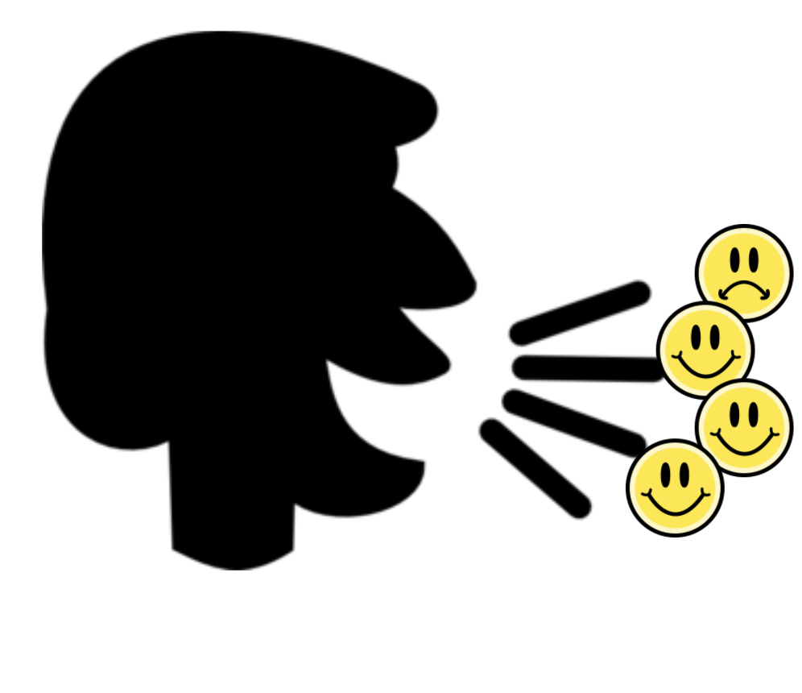
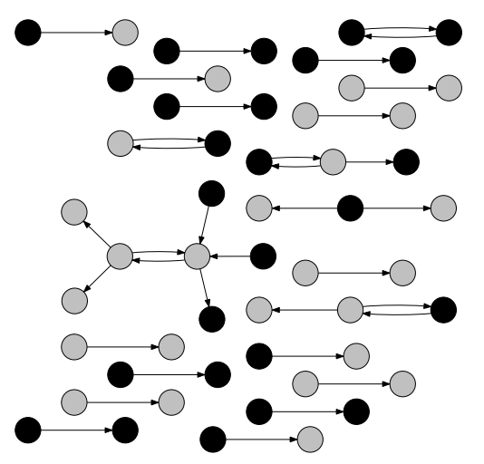

Lauren Fratamico
Data Scientist at Twitter. Previously, Grad Student at the MIT Media Lab
Interested in data, machine learning, and cool uses of those
email.
LinkedIn.
github.
google scholar.
twitter.
Projects
- Connection and Meaningful Conversation (Twitter)
- Loneliness - Finding the Right Person to Connect With (Master's Thesis Research)
- Hearing Happiness - Predicting Happiness from Voice
- Patent Mining and Stock Market Predictions
- Feature Engineering Visualization Tool
- PhET Log Analysis
- Spacial Segregation with Mobile Phone Data
- Topic Modeling with OIRA Data
- Google Intern - Enriching YouTube's Education Content
Connection and Meaningful Conversation (Twitter)
July 2019 - Present
Understanding what drives people to connect on Twitter and how to facilitate more meaningful conversations.Loneliness - Finding the Right Person to Connect With (Master's Thesis Research)
August 2018 - June 2019
Loneliness is becoming an epidemic. As much as 40% of Americans have reported feelings of loneliness, and this is a number that has doubled in the past 50 years. There are similar statistics for other countries as well. For my master's thesis, I'm analyzing Reddit conversations about loneliness to understand the characteristics that facilitate healthy online interactions. I will be examining homophilous qualities of those communicating, as well as the style in which they communicate. The end goal of this research is to build an AI system that connects people with those that they are most likely to be able to have a helpful and productive conversation with. This could be used to connect people online or for an in-person conversation (such as one with someone on a depression hotline).Hearing Happiness - Predicting Happiness from Voice
September 2017 - Present
This is a joint project with Psychologists Dr. Aaron Weidman at the University of Michigan and Dr. Liz Dunn at UBC.

I am exploring if it is possible to build a deep learning classifier that is able to detect current levels of happiness (momentary happiness) from minute-long audio clips of a person talking. This would be a useful classifier for many psychologists who need to record a subject’s current level of happiness, but do not want expensive equipment to do so and may be concerned that asking subjects would bias how they acted in the study they were about to participate in (eg, if the subject detected it was about happiness, it may impact how they act). My collaborators at UBC have already collected the data for this project. This includes a total of 3,931 participant audio recordings from 502 undergraduate students across multiple days. In half these audio clips, the participants are describing their day, and in the other half, the participants are describing an image, each for ~60 seconds. I am currently implementing a deep learning approach to classify the audio recordings into 5 levels of happiness.Patent Mining and Stock Market Predictions
June 2015 - February 2018
This is a joint project with Business School Professors Dr. Jan Bena at UBC Sauder and Dr. Pedro Matos at UVA Darden School.
The overall, lofty, goal of this project is to determine if it is possible to predict stock market fluctuations from US patent data. As a result of the lofty goal, this project has many challenges. First was developing an efficient tool to parse heterogeneous US patent documents (1TB textual data, 1976 - present) as the formats have changed over the years. This was needed to separate out the different components of the patent document (abstract, claims, assignees, etc.). As the companies who the patent belongs to (the assignees) can often be mislabeled (or misspelled), an additional challenge was to develop a contextual algorithm to match the patent's assignee with its publicly traded firm. A basic edit distance algorithm missed quite a few of the cases where the listed assigned company is actually traded as part of a larger company. The third step will be to employ deep learning and other machine learning algorithms to the text of the patent documents to see if the machine can discover which lexical patterns lead to stock market fluctuations. Our first attempts have involved extracting n-grams from the patent claims and assigning a novelty score to each patent based on how common the n-gram is in the patent literature at the time. These novelty scores are then correlated with stock market fluctuations for the companies that produced the patent. We are currently extending on these initial attempts to build a predictive model to use the extracted lexical features (or others discovered through deep learning) to see if they can predict stock market fluctuations.
The overall, lofty, goal of this project is to determine if it is possible to predict stock market fluctuations from US patent data. As a result of the lofty goal, this project has many challenges. First was developing an efficient tool to parse heterogeneous US patent documents (1TB textual data, 1976 - present) as the formats have changed over the years. This was needed to separate out the different components of the patent document (abstract, claims, assignees, etc.). As the companies who the patent belongs to (the assignees) can often be mislabeled (or misspelled), an additional challenge was to develop a contextual algorithm to match the patent's assignee with its publicly traded firm. A basic edit distance algorithm missed quite a few of the cases where the listed assigned company is actually traded as part of a larger company. The third step will be to employ deep learning and other machine learning algorithms to the text of the patent documents to see if the machine can discover which lexical patterns lead to stock market fluctuations. Our first attempts have involved extracting n-grams from the patent claims and assigning a novelty score to each patent based on how common the n-gram is in the patent literature at the time. These novelty scores are then correlated with stock market fluctuations for the companies that produced the patent. We are currently extending on these initial attempts to build a predictive model to use the extracted lexical features (or others discovered through deep learning) to see if they can predict stock market fluctuations.
Feature Engineering Visualization Tool
September 2014 - December 2014; August 2016 - April 2017

A visualization tool built with d3 for exploratory analysis of temporal log data. It promotes a marriage of knowledge engineering and knowledge discovery by combining data-driven, bottom-up insights with human-initiated, top-down understanding. Tempr allows users to understand ways to engineer features in their temporal dataset so that the resulting features are both (1) informative at their abstracted level and (2) able to differentiate labeled groups. It includes (shown on the right) a panel where users can merge features together, then visualize the resulting merged features. In this way, researchers can quickly see if the merged (engineered) features differentiate labeled groups. They can also visualize the performance of the different groups over time. I applied this analytic method towards understanding how different types of learners interact with an online, exploratory learning environment. A paper on this visual analytic approach was accepted to the 2017 Learning @ Scale conference [PDF]. I am currently improving the tool so that it can both support automated semantic suggested groupings of features and be used to inform differences in how different groups use other learning environments (like MOOCs). [Link to the github repo] [Demo].
PhET Log Analysis (Master's Thesis Research)
August 2013 - February 2016

I analyzed a dataset of student's logged interactions with the PhET Circuit Construction Kit simulation (show in the image on the right). This was done by clustering users' behaviors during use of this simulation, and looking for clusters with differing learning gains so that we can mine the behaviors of those who learned a lot while working with this simulation and those that didn't (and others in between). These behaviors can then be used to provide hints to students throughout their interaction with the system to help encourage behaviors identified as productive in the hopes that they can learn more while working with the simulation. Built a user model to classify the users in real time so we can identify students as they are working. Master's thesis was related to the methods above and exploring different representations of user actions in this simulation. Paper accepted and presentation delivered on the topic to the 2015 AIED conference [PDF of conference paper]. Journal paper on the topic also accepted [PDF of journal paper].
Spacial Segregation with Mobile Phone Data
September 2012 - December 2013

This project focused on the social interactions of mobile phone users and analysis of homophily (the tendency of people to make friendships with people like themselves) and segregation. I looked at calls across different areas of a developing South Asian country and computed homophily scores for the types of speakers that were present in that area - English and the native language. I also looked at differences in homophily and segregation for “work-time” vs “home-time” calls. The image shows the network of calls in one region, with colors of the nodes representing the ethnicity of the caller and receiver. As a result of these analyses, we developed a novel way to measure social and spatial segregation using generic spatial mobile network data. This research culminated in a published paper at the 2013 ACM DEV-4 (Symposium on Computing and Development) conference [PDF].
Topic Modeling with OIRA Data
June 2012 - August 2013
I worked with topic models to understand how the policies of federal agencies are reviewed. Initially, I built a tool to scrape ~40,000 policies of federal agencies that were sent for review by the Office of Information and Regulatory Affairs (OIRA). OIRA chooses which of these policies to review and, for those reviewed, whether to approve them or request revisions. I developed topic models to facilitate an understanding of how policy requests are dispositioned.
Google Intern - Enriching YouTube's Education Content
May 2013 - August 2013
Developed a tool as a member of the YouTube Education team to expand the education channel and improve content. Created a (mainly) front-end tool that allowed educators to both tag videos and search for ones already tagged. In this way, it made the experience of finding suitable videos for their classroom more efficient. It also allowed them to curate the content so that other educators could also more easily find suitable content.